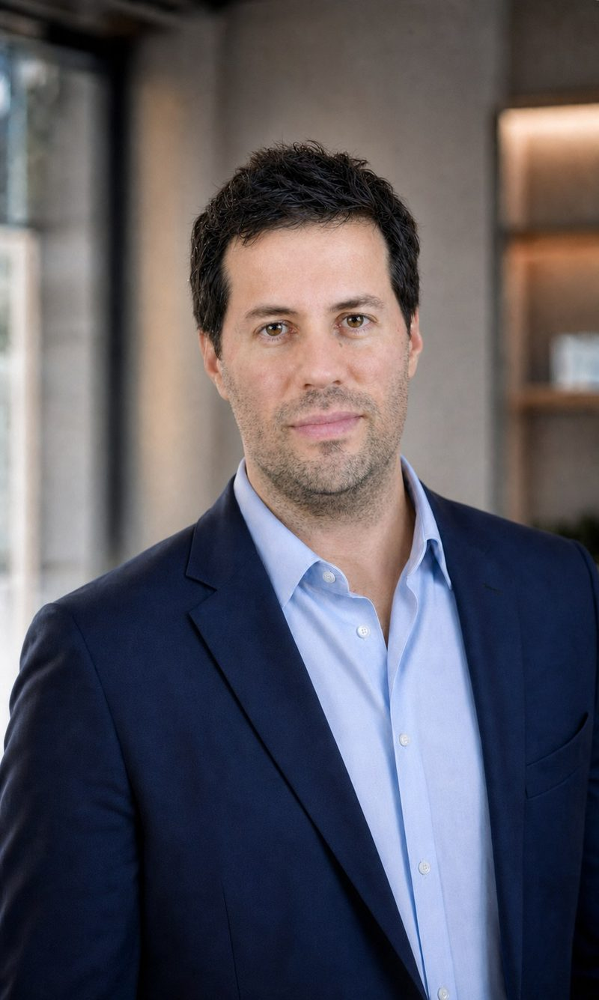

About
PhD researcher. Grant writer. Translator of complex work into fundable projects.
My work sits at the intersection of research and funding — understanding the science well enough to challenge it, and writing clearly enough that a funder trusts it.
I have a PhD in Science and more than 15 years of experience across academia, applied research, government and industry — covering agri-food, dairy, forestry, biomaterials, climate transition, GHG accounting, and applied R&D.
Many consultants can identify programs or write applications. Fewer can understand the underlying research, challenge assumptions, structure the R&D, analyze the data, and translate complex work into clear, credible language for funders, partners, and decision-makers. That combination — drawn from experience across academia, government research, applied R&D, industry partnerships, grant development, and climate and sustainability projects — is what I bring to a project.
The goal in every engagement is the same: help clients move from a promising idea to a stronger project, a more defensible application, and better-informed decisions.
I created projects and secured grants across programs including:
- ACOA
- NRC-IRAP
- NBIF
- Sustainable CAP
- NSERC
- Student Employment Programs
- Provincial Innovation Programs
Across multiple applied R&D, infrastructure, staffing, forestry, biomaterials, agriculture, and environmental projects.
What clients can expect from working with me.
Clearer funding priorities
Stronger, more defensible applications
Better-organized R&D documentation
Reduced internal workload
Credible, decision-ready analysis
Practical, honest recommendations
One honest note: funding approval can never be promised. Those decisions belong to the funding agency — my commitment is an honest assessment, high-quality preparation, strong documentation, and full alignment with the applicable requirements.
Let's see if your project is a fit.
A free 20-minute consultation is the easiest way to find out.